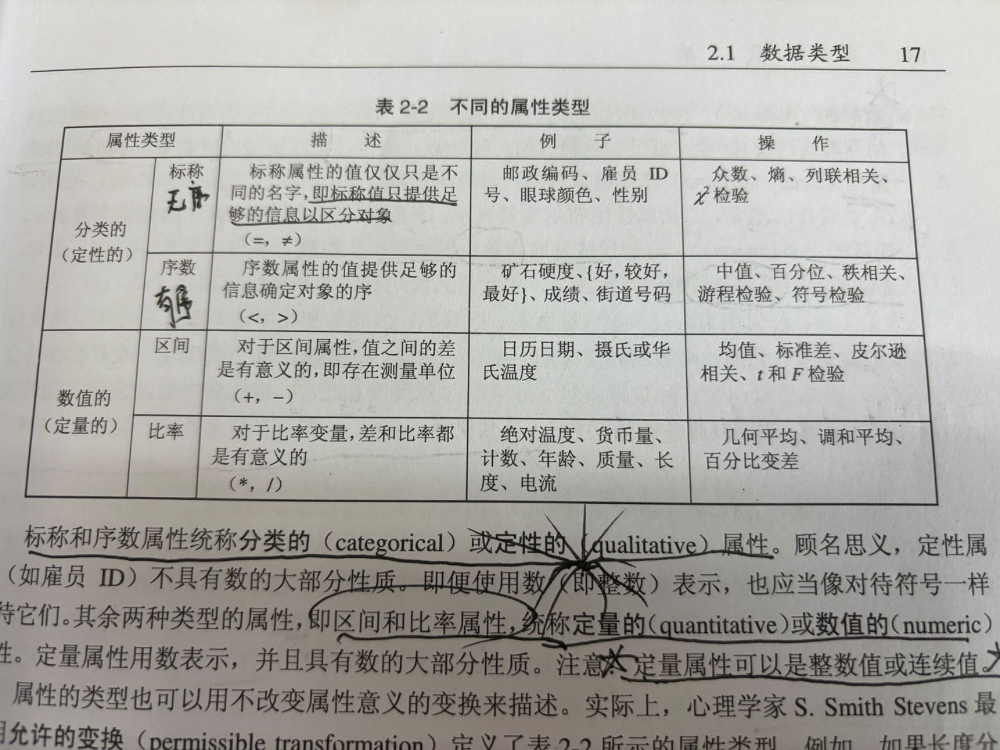

本文针对保研复试进行总复习，对目前的自己针对机器学习、计算机组织，包括数学建模、ACM 等等学科进行自己的理解和概括，以总述为主，内容复习为辅。
目的是为了在复试时更好的吹牛 qwq。
# 机器学习
# 内容复习
# 绪论
无论学习算法 A 多聪明，学习算法 B 多笨拙，期望性能是完全相同的。（NFL 定理）
脱离实际问题，空泛的谈论算法优劣没有意义。
机器学习为交叉学习提供技术支撑，本质上机器学习就是利用大数据
数据库为数据挖掘提供数据管理技术，机器学习和统计学提供数据分析技术。
# 模型评估与选择
过拟合无法彻底避免，我们能做的只有缓解
调参和算法选择没有什么本质区别
泛化误差可分解为偏差、方差和噪声之和。
# 线性模型
形式简单、易于建模。
线性回归：均方误差最小化
线性判别分析：将样本投到一条直线上（更低维的空间）。
多分类问题：一对一、一对多、多对多。
# 决策树
信息增益、希望决策树的样本划分尽可能属于同一类别，数据挖掘里面讲到过。还有剪枝的内容，泛化能力更强。
# 神经网络
感知机（Perception）
BP 算法（误差逆传播）（error BackPropagation)
# 支持向量机
划分的超平面对于训练样本的局部扰动的 “容忍” 性最好
软间隔、正则化（一种罚函数）
# 贝叶斯分类器
基于后验概率
# 集成学习
构建并结合多个学习器来完成学习任务，也被称为多分类器系统。
Boosting：弱学习器提升为强学习器
bagging：自助法啥的
# 聚类
无监督。。。
# 理念概括
利用数据对未来情况进行预测，模型构建的过程中算法从数据提取特征和规律，构建数学模型来表示复杂的关系，希望具有泛化的能力和持续改进的功能。
数据质量，特征提取，模型选择，过拟合欠拟合找到平衡，选用适当的评估指标，模型的可解释性，数据的划分，运行的成本
# 数据挖掘
# 内容
# 绪论
数据挖掘是在大型数据存储库中，自动的发现有用信息的过程。数据挖掘技术用来探查大型数据库，发现先前未知的有用模式。
数据预处理是将未加工的输入数据转换成适合分析的形式
任务：预测任务，描述任务，预测建模
# 数据
数据类型、数据质量、预处理步骤，数据之间的联系。

数据预处理：聚类、抽样、维归约、特征子集选择、特征创建、离散化和二元化、变量变换
# 探索数据
对于有序数据，考虑值的百分位数更有意义。第 p 个百分位数 xp 是一个 x 值，使得 x 的 p% 的观测值小于 xp
可视化：直方图、盒状图、饼图、散布图
# 分类
略
# 理念概括
没什么好概括的
实际和机器学习概括的差不多
一坨屎，妈的，我已经足够了解这个方面的知识了，明天问啥答啥，爱要不要。
结果复习一天的内容屁都没用上，面试就是即兴英语口语 + 竞赛经历讲解 + tree new bee。老师问啥我答啥，照这些老师喜欢的方向去回答，最后目测这些老师都挺满意的，应该问题不大（希望不是 flag）。这玩意还是得硬实力够啊，我看前面的都挺折磨，估计是项目经历不真实导致的吧。
就我个人观察而言，面试技巧已经没啥特别加分的作用了，大家都会，老师也都知道，反套路搞你几句你也寄。实际上，在大家都不会面试技巧时，考察的是情商；然而，在大家都会面试技巧时，考察的照样是情商。走捷径是没有用的。